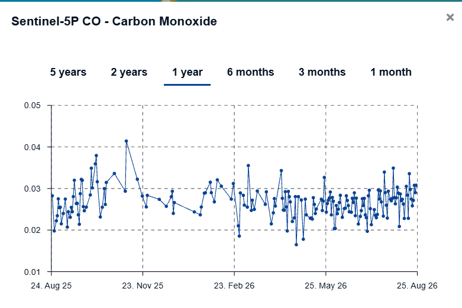
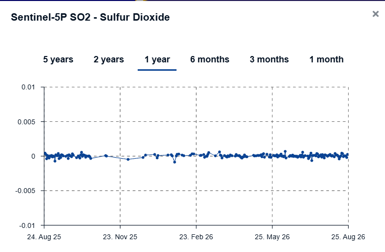
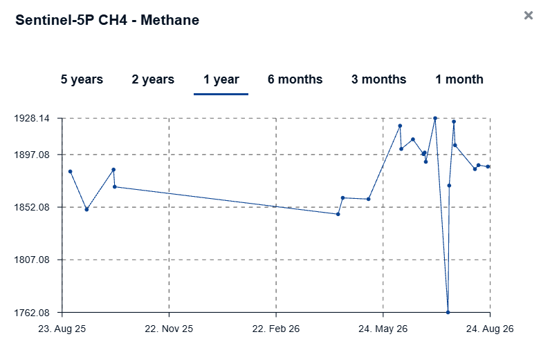
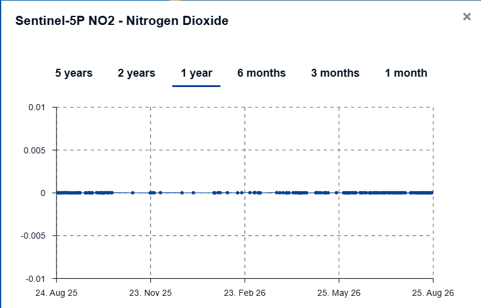
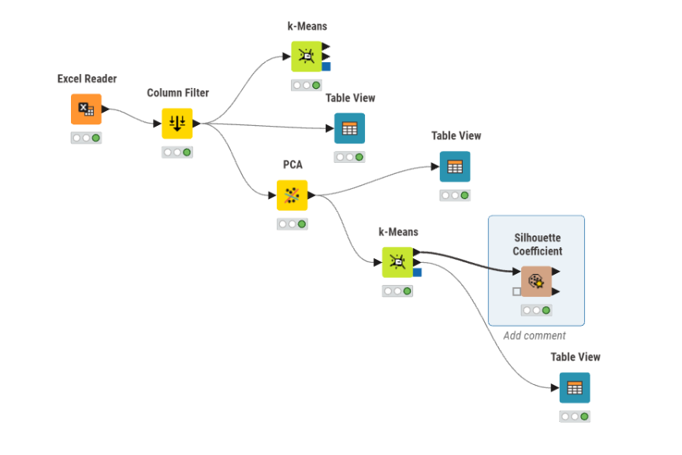
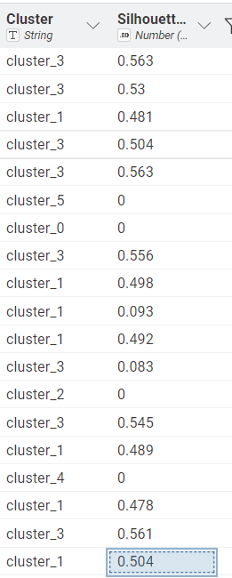

ANALISIS KUALITAS UDARA MENGGUNAKAN TSFEL, PCA, DAN K-MEANS CLUSTERING#
1. Business Understanding#
1.1 Business Understanding#
Kualitas udara dapat dianalisis berdasarkan berbagai jenis polutan. Pada penelitian ini digunakan data kualitas udara dari wilayah pengamatan tingkat kecamatan di Sumenep. Data diperoleh dari Copernicus Data Space dan digunakan untuk mengetahui karakteristik pola data beberapa polutan.
Empat polutan yang digunakan adalah:
CO (Carbon Monoxide)
SO₂ (Sulfur Dioxide)
CH₄ (Methane)
NO₂ (Nitrogen Dioxide)
Data awal berupa data time series harian. Data kemudian melalui proses preprocessing berupa penanganan missing value dan outlier. Setelah data bersih, dilakukan ekstraksi fitur menggunakan TSFEL.
Setiap polutan menghasilkan 68 fitur sehingga empat polutan menghasilkan: \(68×4=272\) fitur
Selanjutnya dilakukan reduksi dimensi menggunakan PCA dan pengelompokan menggunakan K-Means.
1.2 Tujuan#
Tujuan analisis adalah:
mengidentifikasi wilayah pengamatan;
mempersiapkan data time series 365 hari;
menangani missing value;
mengidentifikasi dan memperbaiki outlier;
melakukan ekstraksi 68 fitur TSFEL;
menggabungkan fitur dari empat polutan;
melakukan PCA;
menentukan jumlah cluster K-Means;
membandingkan clustering menggunakan PCA dan seluruh 272 fitur.
2. Data Understanding#
2.1 Sumber Data#
Data diperoleh dari Copernicus Data Space menggunakan data pengamatan Sentinel-5P.
Polutan yang digunakan:
Polutan |
Nama |
|---|---|
CO |
Carbon Monoxide |
SO₂ |
Sulfur Dioxide |
CH₄ |
Methane |
NO₂ |
Nitrogen Dioxide |
3. Identifikasi AOI Menggunakan Folium#
AOI digunakan untuk menentukan wilayah pengamatan pada tingkat kecamatan.
Koordinat polygon yang digunakan:
[113.655634, -7.050613]
[113.655291, -7.066788]
[113.660786, -7.075301]
[113.675552, -7.077344]
[113.682592, -7.073428]
[113.683623, -7.056402]
[113.683623, -7.049081]
[113.670229, -7.045846]
[113.655634, -7.050613]
3.1 Kode Folium#
import folium
# Titik tengah AOI
latitude = -7.060
longitude = 113.670
# Membuat peta
m = folium.Map(
location=[latitude, longitude],
zoom_start=14
)
# Koordinat AOI dalam format GeoJSON
aoi = [
[113.655634, -7.050613],
[113.655291, -7.066788],
[113.660786, -7.075301],
[113.675552, -7.077344],
[113.682592, -7.073428],
[113.683623, -7.056402],
[113.683623, -7.049081],
[113.670229, -7.045846],
[113.655634, -7.050613]
]
# GeoJSON = [longitude, latitude]
# Folium = [latitude, longitude]
polygon = [[lat, lon] for lon, lat in aoi]
folium.Polygon(
locations=polygon,
color="blue",
fill=True,
fill_opacity=0.2,
tooltip="Wilayah Pengamatan"
).add_to(m)
# Titik tengah
folium.Marker(
location=[latitude, longitude],
tooltip="Titik Pengamatan"
).add_to(m)
m
<iframe
src="assets/peta_aoi.html"
width="100%"
height="600"
style="border:none;">
</iframe>
4. Identifikasi Empat Polutan#
Empat dataset yang digunakan adalah:
CO
SO2
CH4
NO2
Masing-masing diproses menggunakan tahapan yang sama.
Data mentah
↓
365 hari
↓
Missing Value
↓
Imputasi
↓
Outlier
↓
Perbaikan Outlier
↓
Time Series
↓
TSFEL
↓
68 fitur
Kode pemeriksaan
import pandas as pd
files = {
"CO": "CO_365_hari_clean.csv",
"SO2": "SO2_365_hari_clean.csv",
"CH4": "CH4_365_hari_clean.csv",
"NO2": "NO2_365_hari_clean.csv"
}
for nama, file in files.items():
df = pd.read_csv(file)
print("=" * 50)
print("POLUTAN :", nama)
print("Jumlah baris :", len(df))
print("Jumlah kolom :", len(df.columns))
print("Missing :", df.isna().sum().sum())
print(df.head())
Hasil yang harus ditampilkan:
POLUTAN : CO
Jumlah baris : 365
Missing : 0
POLUTAN : SO2
Jumlah baris : 365
Missing : 0
POLUTAN : CH4
Jumlah baris : 365
Missing : 0
POLUTAN : NO2
Jumlah baris : 365
Missing : 0
5. Membentuk Time Series 365 Hari#
Setiap dataset disusun berdasarkan tanggal.
Tujuannya agar seluruh data mempunyai interval harian yang konsisten.
Contoh CO:
import pandas as pd
df = pd.read_excel(
"Sentinel-5P_CO.xlsx",
skiprows=3
)
df["Tanggal"] = pd.to_datetime(df["Tanggal"])
df = (
df.drop_duplicates(subset="Tanggal")
.sort_values("Tanggal")
.set_index("Tanggal")
)
tanggal_lengkap = pd.date_range(
start="2025-08-25",
end="2026-08-24",
freq="D"
)
df = df.reindex(tanggal_lengkap)
df.index.name = "Tanggal"
print("Jumlah data:", len(df))
6. Missing Value#
Missing value terjadi ketika terdapat tanggal yang tidak memiliki nilai pengamatan.
Pada penelitian ini digunakan interpolasi linear.
6.1 Rumus#
Keterangan:
Simbol |
Arti |
|---|---|
\(y\) |
nilai yang dicari |
\(y_1\) |
nilai sebelum missing |
\(y_2\) |
nilai sesudah missing |
\(x\) |
posisi missing |
\(x_1\) |
posisi sebelum |
\(x_2\) |
posisi sesudah |
Contoh manual: misalkan:
Hari 1 = 10
Hari 2 = missing
Hari 3 = 14
Maka:
Jadi nilai missing menjadi 12.
6.2 Kode Imputasi#
kolom = "Rata-rata (Mean)"
print("Missing sebelum:")
print(df[kolom].isna().sum())
df[kolom] = (
df[kolom]
.interpolate(method="linear")
.ffill()
.bfill()
)
print("Missing setelah:")
print(df[kolom].isna().sum())
7. Identifikasi Outlier dengan IQR#
IQR digunakan untuk menentukan nilai yang berada di luar batas distribusi normal data.
7.1 Rumus#
Batas bawah:
Batas atas:
8. Outlier CO,SO2,NO2,CH4#
Hasil yang diperoleh:
Polutan |
Jumlah Outlier |
Tanggal Terjadinya Outlier |
|---|---|---|
CO |
14 |
7, 8 Oktober 2025; 7–14 November 2025; 28 Februari 2026; 9 Maret 2026; 26 April 2026; 3 Mei 2026 |
SO₂ |
8 |
6 September 2025; 8 Oktober 2025; 27–28 Januari 2026; 23 Maret 2026; 10 Juni 2026; 1 Juli 2026; 12 Juli 2026 |
CH₄ |
1 |
19 Juli 2026 |
NO₂ |
3 |
8 September 2025; 22 September 2025; 5 Maret 2026 |
Total |
26 |
— |
9. Kode Outlier IQR#
Q1 = df[kolom].quantile(0.25)
Q3 = df[kolom].quantile(0.75)
IQR = Q3 - Q1
batas_bawah = Q1 - 1.5 * IQR
batas_atas = Q3 + 1.5 * IQR
mask_outlier = (
(df[kolom] < batas_bawah) |
(df[kolom] > batas_atas)
)
outlier = df.loc[
mask_outlier,
[kolom]
]
print("Q1 =", Q1)
print("Q3 =", Q3)
print("IQR =", IQR)
print("Batas bawah =", batas_bawah)
print("Batas atas =", batas_atas)
print("Jumlah outlier =", len(outlier))
print(outlier)
Tanggal outlier CO:
No |
Tanggal |
Nilai |
|---|---|---|
1 |
2025-10-07 |
0.035941 |
2 |
2025-10-08 |
0.037928 |
3 |
2025-11-07 |
0.041410 |
4 |
2025-11-08 |
0.040575 |
5 |
2025-11-09 |
0.039739 |
6 |
2025-11-10 |
0.038904 |
7 |
2025-11-11 |
0.038068 |
8 |
2025-11-12 |
0.037233 |
9 |
2025-11-13 |
0.036397 |
10 |
2025-11-14 |
0.035561 |
11 |
2026-02-28 |
0.018566 |
12 |
2026-03-09 |
0.035522 |
13 |
2026-04-26 |
0.016483 |
14 |
2026-05-03 |
0.017798 |
10. Perbaikan Outlier#
Outlier tidak dihapus karena data harus tetap berjumlah 365 hari.
Outlier diubah menjadi missing kemudian diinterpolasi kembali.
df_clean = df.copy()
mask_outlier = (
(df_clean[kolom] < batas_bawah) |
(df_clean[kolom] > batas_atas)
)
# Simpan data outlier
data_outlier = df_clean.loc[
mask_outlier,
[kolom]
].copy()
# Jadikan missing
df_clean.loc[
mask_outlier,
kolom
] = None
# Interpolasi kembali
df_clean[kolom] = (
df_clean[kolom]
.interpolate(method="linear")
.ffill()
.bfill()
)
print("Jumlah data:", len(df_clean))
print("Missing setelah perbaikan:",
df_clean[kolom].isna().sum())
hasil:
Jumlah data : 365
Missing setelah perbaikan : 0
11. Perbandingan Sebelum dan Sesudah Outlier#
Tanggal |
Sebelum |
Sesudah |
|---|---|---|
2025-10-07 |
0.035941 |
0.033219 |
2025-10-08 |
0.037928 |
0.032424 |
2025-11-07 |
0.041410 |
0.029946 |
2025-11-08 |
0.040575 |
0.030543 |
2025-11-09 |
0.039739 |
0.031141 |
2025-11-10 |
0.038904 |
0.031738 |
2025-11-11 |
0.038068 |
0.032336 |
2025-11-12 |
0.037233 |
0.032933 |
2025-11-13 |
0.036397 |
0.033531 |
2025-11-14 |
0.035561 |
0.034128 |
2026-02-28 |
0.018566 |
0.024994 |
2026-03-09 |
0.035522 |
0.028719 |
2026-04-26 |
0.016483 |
0.025154 |
2026-05-03 |
0.017798 |
0.022571 |
12. Perbandingan dengan Z-Score#
Rumus $\( z=\frac{x-\mu}{\sigma} \)$
Keterangan:
\(x\) = nilai pengamatan
\(\mu\) = rata-rata
\(\sigma\) = standar deviasi
\(z\) = Z-Score
Kode:
from scipy.stats import zscore
data_asli = df[kolom].dropna()
z = zscore(data_asli)
hasil_zscore = pd.DataFrame({
"Tanggal": data_asli.index,
"Nilai": data_asli.values,
"Z-Score": z
})
outlier_z = hasil_zscore[
hasil_zscore["Z-Score"].abs() > 3
]
print("Jumlah outlier:", len(outlier_z))
print(outlier_z)
Hasil CH₄
Tanggal : 2026-07-19
Nilai : 1762.084961
Z-Score : -3.411626
Karena:
maka nilai tersebut merupakan kandidat outlier berdasarkan Z-Score.
13. Eksplorasi Time Series#
Setelah preprocessing, setiap polutan divisualisasikan.
import matplotlib.pyplot as plt
plt.figure(figsize=(12,5))
plt.plot(
df_clean.index,
df_clean[kolom]
)
plt.xlabel("Tanggal")
plt.ylabel("Nilai")
plt.title("Time Series CO Setelah Preprocessing")
plt.show()
Gambar 1: Time series CO

Gambar 2: Time series SO₂
Gambar 3: Time series CH₄
Gambar 4: Time series NO₂
14. Ekstraksi Fitur TSFEL#
Setelah preprocessing, 365 data harian digunakan sebagai input TSFEL.
Setiap polutan menghasilkan 68 fitur.
\(68×4=272\)
15. Daftar 68 Fitur TSFEL#
No |
Nama fitur |
|---|---|
f1 |
abs_energy |
f2 |
auc |
f3 |
autocorr |
f4 |
average_power |
f5 |
calc_centroid |
f6 |
calc_max |
f7 |
calc_mean |
f8 |
calc_median |
f9 |
calc_min |
f10 |
calc_std |
f11 |
calc_var |
f12 |
dfa |
f13 |
distance |
f14 |
ecdf |
f15 |
ecdf_percentile |
f16 |
ecdf_percentile_count |
f17 |
ecdf_slope |
f18 |
entropy |
f19 |
fundamental_frequency |
f20 |
higuchi_fractal_dimension |
f21 |
hist_mode |
f22 |
human_range_energy |
f23 |
hurst_exponent |
f24 |
interq_range |
f25 |
kurtosis |
f26 |
lempel_ziv |
f27 |
lpcc |
f28 |
max_frequency |
f29 |
max_power_spectrum |
f30 |
maximum_fractal_length |
f31 |
mean_abs_deviation |
f32 |
mean_abs_diff |
f33 |
mean_diff |
f34 |
median_abs_deviation |
f35 |
median_abs_diff |
f36 |
median_diff |
f37 |
median_frequency |
f38 |
mfcc |
f39 |
mse |
f40 |
negative_turning |
f41 |
neighbourhood_peaks |
f42 |
petrosian_fractal_dimension |
f43 |
pk_pk_distance |
f44 |
positive_turning |
f45 |
power_bandwidth |
f46 |
rms |
f47 |
skewness |
f48 |
slope |
f49 |
spectral_centroid |
f50 |
spectral_decrease |
f51 |
spectral_distance |
f52 |
spectral_entropy |
f53 |
spectral_kurtosis |
f54 |
spectral_positive_turning |
f55 |
spectral_roll_off |
f56 |
spectral_roll_on |
f57 |
spectral_skewness |
f58 |
spectral_slope |
f59 |
spectral_spread |
f60 |
spectral_variation |
f61 |
spectrogram_mean_coeff |
f62 |
sum_abs_diff |
f63 |
wavelet_abs_mean |
f64 |
wavelet_energy |
f65 |
wavelet_entropy |
f66 |
wavelet_std |
f67 |
wavelet_var |
f68 |
zero_cross |
16. Rumus Manual 68 Fitur#
No |
Fitur |
Penjelasan |
Rumus / Perhitungan |
Makna |
||
|---|---|---|---|---|---|---|
f1 |
Absolute Energy |
Mengukur total energi sinyal berdasarkan kuadrat setiap nilai. |
\(E=\sum_{i=1}^{N}x_i^2\) |
Semakin besar → energi/tingkat nilai sinyal semakin besar. |
||
f2 |
Area Under Curve (AUC) |
Menghitung luas di bawah kurva time series. |
\(AUC\approx\sum \frac{(x_i+x_{i+1})}{2}\Delta t\) |
Menunjukkan akumulasi nilai sepanjang waktu. |
||
f3 |
Autocorrelation |
Mengukur kemiripan sinyal dengan dirinya sendiri pada suatu lag. |
\(R(k)=\sum_{t}(x_t-\bar{x})(x_{t+k}-\bar{x})\) |
Menunjukkan pola yang berulang dari waktu ke waktu. |
||
f4 |
Average Power |
Mengukur rata-rata energi per data. |
\(P=\frac{1}{N}\sum x_i^2\) |
Menunjukkan tingkat energi rata-rata sinyal. |
||
f5 |
Centroid |
Menentukan titik pusat distribusi nilai sinyal. |
\(C=\frac{\sum i\,x_i}{\sum x_i}\) |
Menunjukkan posisi pusat/berat distribusi sinyal. |
||
f6 |
Maximum |
Mencari nilai terbesar dalam data. |
\(x_{\max}=\max(x_i)\) |
Menunjukkan nilai tertinggi. |
||
f7 |
Mean |
Menghitung nilai rata-rata. |
\(\bar{x}=\frac{1}{N}\sum x_i\) |
Menunjukkan nilai pusat data. |
||
f8 |
Median |
Mengambil nilai tengah setelah data diurutkan. |
\(Median=x_{(N+1)/2}\) untuk \(N\) ganjil |
Menunjukkan pusat data yang lebih tahan terhadap outlier. |
||
f9 |
Minimum |
Mencari nilai terkecil. |
\(x_{\min}=\min(x_i)\) |
Menunjukkan nilai terendah. |
||
f10 |
Standard Deviation |
Mengukur seberapa jauh data menyebar dari rata-rata. |
\(\sigma=\sqrt{\frac{1}{N}\sum(x_i-\bar{x})^2}\) |
Semakin besar → variasi data semakin tinggi. |
||
f11 |
Variance |
Mengukur penyebaran data menggunakan kuadrat deviasi. |
\(\sigma^2=\frac{1}{N}\sum(x_i-\bar{x})^2\) |
Menunjukkan tingkat variasi data. |
||
f12 |
DFA |
Detrended Fluctuation Analysis mengukur korelasi jangka panjang dalam sinyal. |
Analisis fluktuasi kumulatif: \(F(n)\propto n^\alpha\) |
Menunjukkan ketergantungan/pola jangka panjang. |
||
f13 |
Distance |
Mengukur jarak/perubahan antara nilai-nilai sinyal. |
(D=\sum |
x_{i+1}-x_i |
) |
Menunjukkan seberapa besar perubahan sinyal. |
f14 |
ECDF |
Menghitung distribusi kumulatif empiris data. |
\(F(x)=\frac{1}{N}\sum I(x_i\le x)\) |
Menunjukkan proporsi data yang berada ≤ nilai tertentu. |
||
f15 |
ECDF Percentile |
Menentukan nilai pada persentil tertentu dari distribusi data. |
\(x_p=F^{-1}(p)\) |
Menunjukkan posisi nilai pada distribusi. |
||
f16 |
ECDF Percentile Count |
Menghitung jumlah data yang berada pada/di bawah persentil tertentu. |
\(Count=N\times F(x_p)\) |
Menunjukkan banyaknya data sampai persentil tertentu. |
||
f17 |
ECDF Slope |
Mengukur kemiringan kurva distribusi kumulatif empiris. |
\(Slope=\frac{\Delta F(x)}{\Delta x}\) |
Menunjukkan seberapa cepat distribusi kumulatif berubah. |
||
f18 |
Entropy |
Mengukur tingkat ketidakpastian/kerandoman sinyal. |
\(H=-\sum p_i\log_2p_i\) |
Semakin besar → sinyal semakin tidak teratur. |
||
f19 |
Fundamental Frequency |
Mencari frekuensi dasar atau frekuensi utama sinyal. |
\(f_0=\frac{1}{T}\) |
Menunjukkan frekuensi utama suatu pola periodik. |
||
f20 |
Higuchi Fractal Dimension |
Mengukur kompleksitas/fraktalitas sinyal menggunakan metode Higuchi. |
\(FD\) diperoleh dari hubungan \(L(k)\) terhadap \(k\) |
Semakin tinggi → pola sinyal semakin kompleks. |
||
f21 |
Histogram Mode |
Menentukan nilai yang paling sering muncul berdasarkan histogram. |
\(Mode=\arg\max_x Frequency(x)\) |
Menunjukkan nilai yang paling dominan. |
||
f22 |
Human Range Energy |
Mengukur energi sinyal pada rentang frekuensi yang berhubungan dengan rentang pendengaran manusia. |
(E=\sum_{f\in range} |
X(f) |
^2) |
Menunjukkan energi pada rentang frekuensi tertentu. |
f23 |
Hurst Exponent |
Mengukur kecenderungan data memiliki pola persisten atau antipersisten. |
\(R/S\propto n^H\) |
\(H>0.5\) persisten, \(H<0.5\) antipersisten. |
||
f24 |
Interquartile Range |
Mengukur rentang 50% data bagian tengah. |
\(IQR=Q_3-Q_1\) |
Semakin besar → penyebaran data tengah semakin besar. |
||
f25 |
Kurtosis |
Mengukur bentuk ekor distribusi data. |
\(K=\frac{E[(X-\mu)^4]}{\sigma^4}\) |
Menunjukkan ketebalan ekor/potensi nilai ekstrem. |
||
f26 |
Lempel-Ziv Complexity |
Mengukur kompleksitas pola berdasarkan jumlah pola baru yang ditemukan. |
\(C_{LZ}\) berdasarkan jumlah substring/pola baru |
Semakin tinggi → pola semakin kompleks. |
||
f27 |
LPCC |
Linear Predictive Cepstral Coefficients menggambarkan karakteristik spektral sinyal. |
Koefisien diperoleh dari LPC dan transformasi cepstral. |
Menunjukkan karakteristik spektral sinyal. |
||
f28 |
Maximum Frequency |
Mencari frekuensi tertinggi yang terdeteksi pada spektrum. |
(f_{\max}=\arg\max_f |
X(f) |
) |
Menunjukkan frekuensi maksimum dominan. |
f29 |
Max Power Spectrum |
Mencari daya maksimum pada spektrum frekuensi. |
\(P_{\max}=\max(P(f))\) |
Menunjukkan frekuensi dengan daya terbesar. |
||
f30 |
Maximum Fractal Length |
Mengukur panjang maksimum struktur fraktal pada sinyal. |
\(L_{\max}=\max(L(k))\) |
Menunjukkan kompleksitas geometris maksimum. |
||
f31 |
Mean Absolute Deviation |
Mengukur rata-rata jarak absolut data dari rata-rata. |
(MAD=\frac{1}{N}\sum |
x_i-\bar{x} |
) |
Menunjukkan penyebaran data terhadap mean. |
f32 |
Mean Absolute Difference |
Mengukur rata-rata perubahan absolut antar data berurutan. |
(MADiff=\frac{1}{N-1}\sum |
x_{i+1}-x_i |
) |
Menunjukkan besarnya perubahan antar waktu. |
f33 |
Mean Difference |
Mengukur rata-rata selisih antar nilai berurutan. |
\(MD=\frac{1}{N-1}\sum(x_{i+1}-x_i)\) |
Menunjukkan kecenderungan perubahan naik/turun. |
||
f34 |
Median Absolute Deviation |
Mengukur penyebaran berdasarkan median. |
(MAD=median( |
x_i-Median(x) |
)) |
Penyebaran yang lebih tahan terhadap outlier. |
f35 |
Median Absolute Difference |
Menghitung median perubahan absolut antar data. |
(Median( |
x_{i+1}-x_i |
)) |
Menunjukkan perubahan tipikal antar waktu. |
f36 |
Median Difference |
Menghitung median selisih antar nilai berurutan. |
\(Median(x_{i+1}-x_i)\) |
Menunjukkan perubahan tengah pada data. |
||
f37 |
Median Frequency |
Menentukan frekuensi yang membagi total energi spektrum menjadi dua bagian. |
\(\sum_{f<f_m}P(f)=\frac12\sum_fP(f)\) |
Menunjukkan pusat distribusi energi frekuensi. |
||
f38 |
MFCC |
Mel-Frequency Cepstral Coefficients menggambarkan karakteristik spektrum menggunakan skala Mel. |
(MFCC=DCT(\log(MelFilterbank( |
X(f) |
^2)))) |
Menggambarkan karakteristik spektral sinyal. |
f39 |
MSE / Multiscale Entropy |
Mengukur kompleksitas informasi pada berbagai skala waktu. |
Entropi dihitung setelah coarse-graining pada beberapa skala. |
Menunjukkan kompleksitas sinyal pada berbagai skala. |
||
f40 |
Negative Turning Points |
Menghitung titik perubahan arah yang menunjukkan pola turun. |
Hitung perubahan tanda pada turunan/slope negatif. |
Menunjukkan jumlah perubahan arah ke bawah. |
||
f41 |
Neighbourhood Peaks |
Menghitung puncak lokal yang memiliki tetangga di sekitarnya. |
\(x_i>x_{i-1}\) dan \(x_i>x_{i+1}\) |
Menunjukkan jumlah puncak lokal. |
||
f42 |
Petrosian Fractal Dimension |
Mengukur kompleksitas fraktal berdasarkan perubahan tanda turunan. |
\(D=\frac{\log_{10}N}{\log_{10}N+\log_{10}(N/(N+0.4N_\Delta))}\) |
Mengukur kompleksitas bentuk sinyal. |
||
f43 |
Peak-to-Peak Distance |
Mengukur jarak antar puncak sinyal. |
(D_{p2p}= |
p_{i+1}-p_i |
) |
Menunjukkan jarak antar kejadian puncak. |
f44 |
Positive Turning Points |
Menghitung titik perubahan arah yang menunjukkan pola naik. |
Hitung perubahan tanda pada turunan/slope positif. |
Menunjukkan jumlah perubahan arah ke atas. |
||
f45 |
Power Bandwidth |
Mengukur lebar rentang frekuensi yang mengandung daya tertentu. |
\(BW=f_{upper}-f_{lower}\) |
Menunjukkan penyebaran energi pada frekuensi. |
||
f46 |
RMS |
Root Mean Square mengukur besar efektif sinyal. |
\(RMS=\sqrt{\frac{1}{N}\sum x_i^2}\) |
Menunjukkan besarnya sinyal secara efektif. |
||
f47 |
Skewness |
Mengukur kemencengan distribusi. |
\(S=\frac{E[(X-\mu)^3]}{\sigma^3}\) |
Positif → ekor kanan; negatif → ekor kiri. |
||
f48 |
Slope |
Mengukur kemiringan/tren sinyal terhadap waktu. |
\(m=\frac{\Delta y}{\Delta x}\) |
Positif → cenderung naik; negatif → cenderung turun. |
||
f49 |
Spectral Centroid |
Menentukan pusat massa spektrum frekuensi. |
\(SC=\frac{\sum fP(f)}{\sum P(f)}\) |
Menunjukkan pusat distribusi energi frekuensi. |
||
f50 |
Spectral Decrease |
Mengukur penurunan energi spektrum terhadap frekuensi. |
\(SD=\frac{\sum\frac{P(f)-P(1)}{f-1}}{\sum P(f)}\) |
Menunjukkan kecenderungan energi menurun pada frekuensi tinggi. |
||
f51 |
Spectral Distance |
Mengukur jarak antara distribusi spektrum. |
\(D(P,Q)\) menggunakan ukuran jarak distribusi spektral. |
Menunjukkan perbedaan karakteristik spektrum. |
||
f52 |
Spectral Entropy |
Mengukur kerandoman distribusi energi frekuensi. |
\(H=-\sum p_f\log p_f\) |
Semakin tinggi → energi lebih tersebar/kompleks. |
||
f53 |
Spectral Kurtosis |
Mengukur bentuk ekor distribusi spektrum. |
\(K=\frac{E[(F-\mu_f)^4]}{\sigma_f^4}\) |
Menunjukkan konsentrasi/ekstrem pada spektrum. |
||
f54 |
Spectral Positive Turning Points |
Menghitung perubahan arah positif pada spektrum. |
Hitung perubahan tanda turunan spektrum ke arah positif. |
Menunjukkan jumlah kenaikan lokal spektrum. |
||
f55 |
Spectral Roll-off |
Menentukan frekuensi tempat sebagian besar energi spektrum telah tercapai. |
Cari \(f_r\) sehingga \(\sum_{f\le f_r}P(f)=\alpha\sum P(f)\) |
Menunjukkan batas distribusi energi frekuensi. |
||
f56 |
Spectral Roll-on |
Menentukan frekuensi awal ketika energi spektrum mulai mencapai proporsi tertentu. |
Cari \(f_r\) berdasarkan proporsi energi tertentu. |
Menunjukkan awal konsentrasi energi spektrum. |
||
f57 |
Spectral Skewness |
Mengukur kemencengan distribusi energi frekuensi. |
\(S_f=\frac{E[(f-\mu_f)^3]}{\sigma_f^3}\) |
Menunjukkan arah kemencengan distribusi frekuensi. |
||
f58 |
Spectral Slope |
Mengukur kemiringan energi spektrum terhadap frekuensi. |
\(m=\frac{\Delta P(f)}{\Delta f}\) |
Menunjukkan apakah energi cenderung naik/turun terhadap frekuensi. |
||
f59 |
Spectral Spread |
Mengukur penyebaran energi di sekitar spectral centroid. |
\(SS=\sqrt{\frac{\sum(f-SC)^2P(f)}{\sum P(f)}}\) |
Semakin besar → energi tersebar pada rentang frekuensi lebih luas. |
||
f60 |
Spectral Variation |
Mengukur perubahan distribusi spektrum antar waktu. |
Berdasarkan jarak/perubahan spektrum antar frame. |
Menunjukkan perubahan karakteristik spektrum. |
||
f61 |
Spectrogram Mean Coefficient |
Menghitung nilai rata-rata koefisien pada spectrogram. |
\(Mean=\frac{1}{N}\sum C_i\) |
Menunjukkan rata-rata energi/koefisien pada spectrogram. |
||
f62 |
Sum Absolute Difference |
Menjumlahkan seluruh perubahan absolut antar data. |
(SAD=\sum |
x_{i+1}-x_i |
) |
Menunjukkan total perubahan sinyal. |
f63 |
Wavelet Absolute Mean |
Menghitung rata-rata absolut koefisien wavelet. |
(WAM=\frac{1}{N}\sum |
W_i |
) |
Menunjukkan besarnya koefisien wavelet. |
f64 |
Wavelet Energy |
Mengukur energi koefisien wavelet. |
\(WE=\sum W_i^2\) |
Menunjukkan energi pada representasi wavelet. |
||
f65 |
Wavelet Entropy |
Mengukur ketidakpastian distribusi energi wavelet. |
\(H=-\sum p_i\log p_i\) |
Menunjukkan kompleksitas distribusi energi wavelet. |
||
f66 |
Wavelet Standard Deviation |
Mengukur penyebaran koefisien wavelet. |
\(\sigma_W=\sqrt{\frac{1}{N}\sum(W_i-\bar W)^2}\) |
Menunjukkan variasi koefisien wavelet. |
||
f67 |
Wavelet Variance |
Mengukur variansi koefisien wavelet. |
\(Var(W)=\frac{1}{N}\sum(W_i-\bar W)^2\) |
Menunjukkan penyebaran energi/koefisien wavelet. |
||
f68 |
Zero Crossing Rate |
Menghitung berapa kali sinyal melewati nilai nol. |
\(ZCR=\frac{1}{N-1}\sum I(x_i x_{i+1}<0)\) |
Menunjukkan frekuensi perubahan tanda sinyal. |
17. Pembuktian Manual dengan TSFEL#
Setelah perhitungan manual, hasil dibandingkan dengan hasil TSFEL.
Hasil ekstraksi akhir
Jumlah fitur : 68
Ukuran data : (1, 68)
Jumlah NaN : 0
Jumlah Inf : 0
Fitur bermasalah : tidak ada
18. Penggabungan Empat Polutan#
Data masing-masing polutan menghasilkan 68 fitur. Jumlah:
\(68+68+68+68=272\)
19. Identifikasi Data Se-Kelas#
Data sekelas berarti data CO, SO₂, CH₄, dan NO₂ yang mewakili unit observasi yang sama.
Dengan demikian diperoleh:
atau 19 baris × 272 fitur numerik.
Dataset final:
Sheet |
Baris |
Kolom |
|---|---|---|
Semua Fitur |
19 |
274 |
CO |
19 |
70 |
SO₂ |
19 |
70 |
CH₄ |
19 |
70 |
NO₂ |
19 |
70 |
274 kolom pada Semua Fitur terdiri dari:
yaitu:
Nama
Daerah
272 fitur.
20. Pemeriksaan Dataset Gabungan#
import pandas as pd
file = "data_terbaru.xlsx"
df = pd.read_excel(
file,
sheet_name="Semua Fitur"
)
print("Ukuran:", df.shape)
print("Missing:", df.isna().sum().sum())
print("Duplikat:", df.duplicated().sum())
print("Nama unik:",
df["Nama"].nunique())
print("Kolom non-numerik:")
print(df.select_dtypes(exclude="number").columns)
21. Workflow KNIME#

22. PCA#
Dataset mempunyai:
fitur numerik.
Jumlah observasi:
Jumlah komponen PCA maksimum yang dapat digunakan:
Jadi digunakan:
\(PCA=18\)
23. K-Means#
K-Means digunakan untuk mengelompokkan data berdasarkan kemiripan fitur.
Rumus jarak Euclidean:
24. Menentukan Jumlah Cluster#
uji: K=1,2,3,4,5,6
Gunakan dua evaluasi:
Elbow
Silhouette
25. Elbow Method#
Rumus SSE:
Semakin besar K, SSE biasanya semakin kecil.
Yang dicari adalah titik ketika penurunan SSE mulai melandai.
26. Silhouette#
Silhouette mengukur seberapa baik data berada pada cluster-nya.
Rumus:
Keterangan:
\(a(i)\) = rata-rata jarak data terhadap anggota cluster sendiri.
\(b(i)\) = rata-rata jarak terhadap cluster terdekat lainnya.
Nilai mendekati 1 menunjukkan pemisahan cluster yang lebih jelas.
27. Hasil Cross-Check Dataset Terbaru#
Untuk membantu pengecekan, hasil perhitungan pada dataset terbaru yang sudah kita dapatkan:
